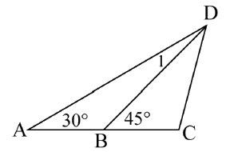
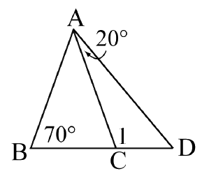
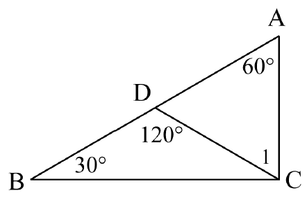

因為 ∠ABD + 45° = 180°（平角），
而以 △ABD 來說，三個內角和為 180°，
也就是 ∠ABD + 30° + ∠1 = 180°。
綜合以上 2 個等式，可以得出 30° + ∠1 = 45°，
所以 ∠1 = 45° − 30° = 15°。

△ABC 是等腰三角形，所以 ∠ACB = 70°。
∠1 + ∠ACB (70°) = 180°（平角），
而以 △ACD 來說，∠D + 20° + ∠1 = 180°。
綜合以上 2 個等式，可以得出 ∠D + 20° = 70°，
所以 ∠D = 70° − 20° = 50°。

因為 ∠ADC + 120° = 180°（平角），
而以 △ADC 來說，三個內角和為 180°，
也就是 ∠ADC + 60° + ∠1 = 180°。
綜合以上 2 個等式，可以得出 60° + ∠1 = 120°，
所以 ∠1 = 120° − 60° = 60°。